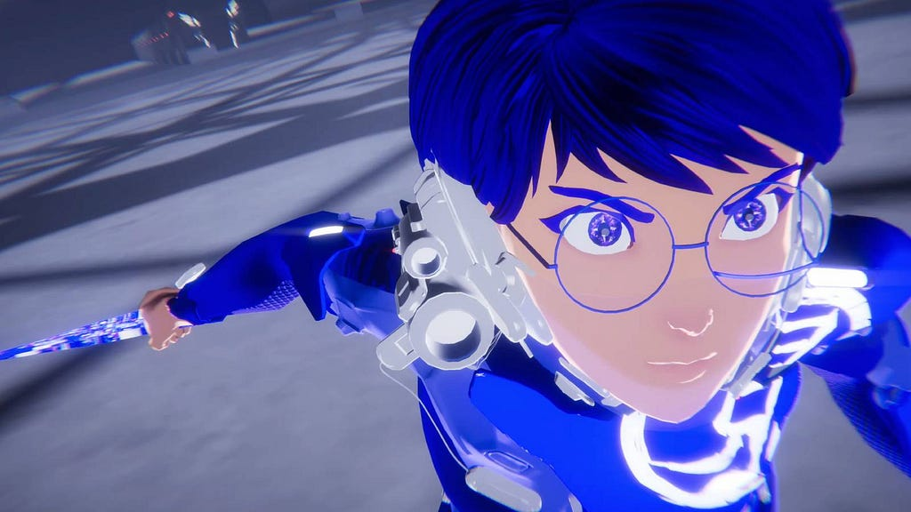
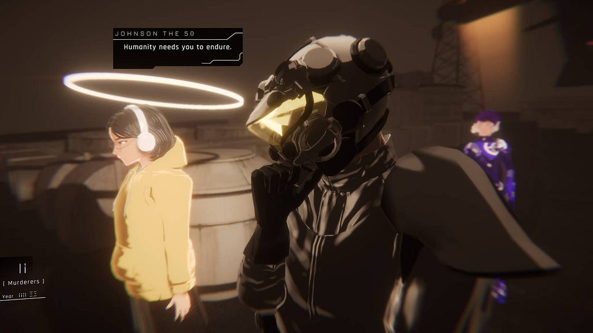
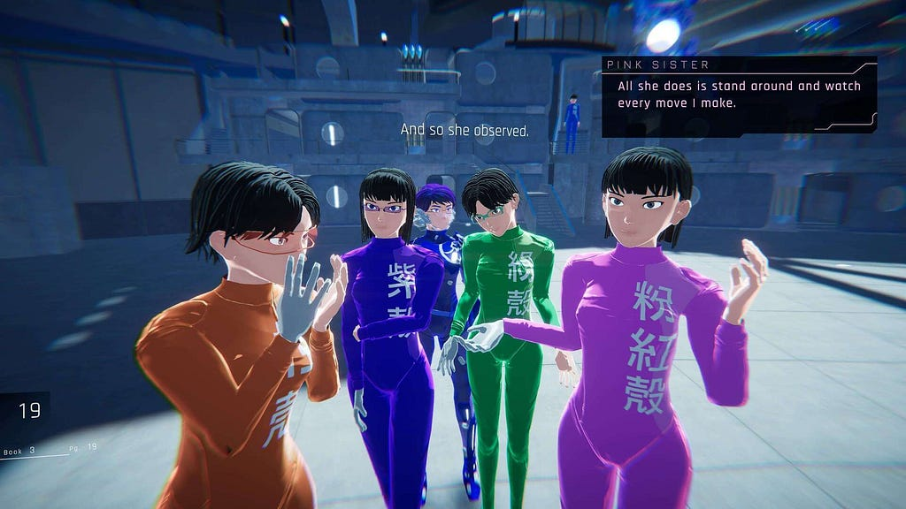
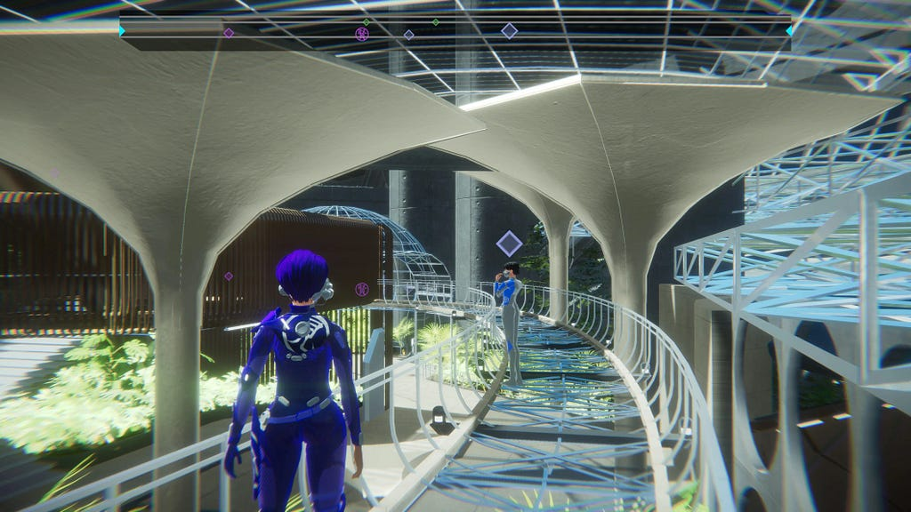
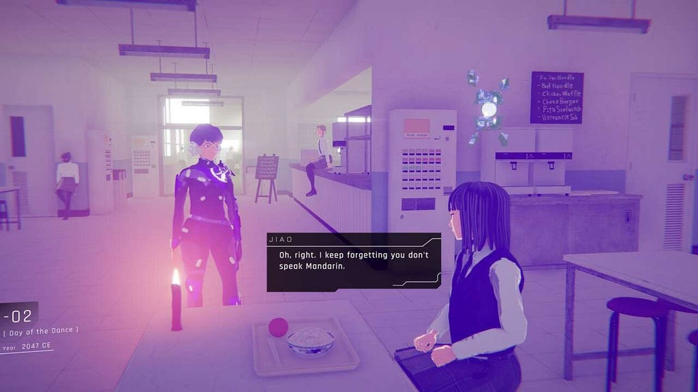
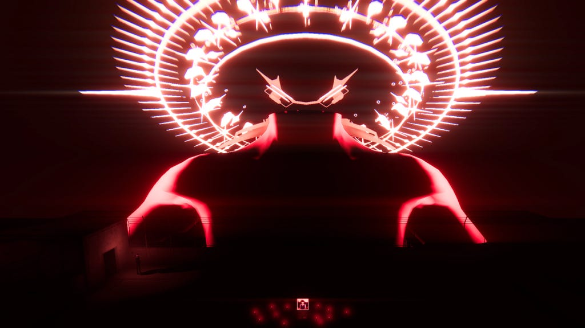

"Existe uma estrela e uma estrela e uma gravidade perigosa…" Essa é apenas uma das frases confusas que você vai ouvir assim que começar sua jornada por 1000xResist, o game de estreia da desenvolvedora Sunset Visitor. E que estreia! Com uma narrativa envolvente e uma trama que mistura de forma genial conceitos tão constratantes quanto ficção-científica pós-acoliptica e a diáspora dos habitantes de Hong Kong, o jogo surpreende ao entregar uma experiência diferente de qualquer outra que você já teve.
Há um nó e um fio que se aperta
Não é uma tarefa fácil emitir uma opinão sobre 1000xResist sem revelar alguns spoilers sobre o jogo — ainda mais um que mexe tanto com o tempo — mas prometo que darei o meu melhor! Basicamente a história em torno de da jovem Iris e seus clones. Em algum momento no início do século XXI, uma raça alienígena chamada de "Ocupantes" invadiu a Terra e provocou uma doença misteriosa que fazia os indivíduos infectados chorarem sem parar, perdendo todos os fluídos de seus corpos. Porém, Iris era a uma única pessoa imune.

Tornando-se o único ser humano sobrevivente desse apocalipse, Iris se torna praticamente uma divindade chamada de "A Grande Mãe" e passa a conceber clones seus com diferentes funções para tentar construir uma nova sociedade. Enquanto uma de seus clones, chamada de "Observadora", comunga com outras irmãs pelas memórias de Iris, a protagonista e o jogador tentam tecer essa enorme colcha de retalhos de acontecimentos para compreender o que aconteceu com Iris e com o mundo.
O problema é que não é algo fácil lidar com uma torrente de emoções diferentes vindo de uma jovem que era problemática mesmo antes de se tornar a única sobrevivente da humanidade. Filha de pais que participaram dos protestos pela independência de Hong Kong, Iris teve que lidar problemas na sua relação com seus pais e também com Jiao, sua melhor amiga no colégio. Suas frustrações, suas alegrias e seus arrependimentos se misturam aos acontecimentos que levaram à extinção da humanidade e à criação de uma sociedade utópica frágil com seus clones.

Vistos como inimigos, os "ocupantes" são criaturas gigantes cercadas por halos e que somente são capazes de se comunicar através da recriação fidedigna de memórias. Infelizmente, ao tentar replicar esse método com os humanos, a "doença" surgiu, em que os indivíduos são tomados por uma enchurrada de sentimentos e recordações tão avassaladoras que acabam literalmente chorando até morrer. Exceto Iris. Mas, por quê? O que ela, entre todos os humanos tem de tão especial?
Isso nunca fica claro no game. Iris foi a escolhida. Quer ela queira, ou não. E da mesma forma que ela não pode compreender a forma como os "ocupantes" tentavam se comunicar com ela, ela também não é capaz de reconstruir a sociedade com cópias suas. Por mais que ela tente aperfoiçoar seus métodos, ou por mais que ela tente "comungar" com suas irmãs para que lhe compreendam, ainda falta algo.

Nesse momento — praticamente na metade das cerca de 10 horas para concluir o jogo e assistir um de seus finais — o jogador percebe que 1000xResist é muito mais do que apenas uma história de ficção-científica sobre o fim do mundo. Isso é apenas um pano de fundo. Afinal, diferentes mídias já abordaram esse tema, não é mesmo? Aqui, o que realmente conta, é apenas Iris.
Fonte: Agora estamos falando a língua deles. Isso não é a morte também?
Mãe: Somos uma tecnologia pobre. O corpo e o cérebro humanos? Capazes demais de acumular coisas. Desesperados demais para se apegar a elas. Você só precisa seguir em frente.
Diálogo entre um dos "ocupantes" e Iris, perto do fim do game
E a equipe de desenvolvedores faz questão de deixar isso evidente desde as mecânicas simples de movimento e interação até os designs minimalistas e quase "infantis" dos cenários. 1000xResist preza em fazer "o mais no pouco", entregando ao jogador o que é realmente necessário para ele compreender a história e o que está escondido por entre as entrelinhas da trama. Tudo o que você precisa fazer é interagir com outras personagens pelos cenários e utilizar uma "roda do tempo" para viajar entre diferentes períodos em um mesmo local e vislumbrar vários instantes no tempo.

Existe uma escolha, e nós não a faremos
No decorrer da trama do jogo, fica complicado imaginar quanto tempo se passou desde a chegada dos "ocupantes". Seriam 100, 1000 ou talvez 10 mil anos? Difícil imaginar. O que está claro é que a história da humanidade (e talvez do próprio ser humano, enquanto indivíduo) está presa a ciclos sem fim. O sentimento de revolta contra governos autoritários dos pais de Iris se reflete da mesma forma quando um dos clones de Iris, chamada "Azul", comete atos de terrorismo contra um regime facista instalado por algumas irmãs. Semelhantemente, se repetem as falhas de Iris para com sua amiga Jiao na mesma forma em que ela trata algumas irmãs de forma recriminável.

Seria o título do game um aviso a quantas vezes precisamos "resistir" a essas voltas incrotoláveis que o destino insiste em dar em nossas vidas? Aja o que houver, Iris permanece. Seja a original, ou seus clones. Sua vida antes da chegada dos "ocupantes" parecia insuportável, então qual solução seria melhor do que tentar viver com ninguém mais do que apenas você mesmo (várias vezes)?
Ao se inspirar em clássicos da ficção como "Admirável Mundo Novo" e nas temáticas de animes como "Neon Genesis Evangelion", 1000xResist reconstrói o mundo a partir de apenas uma pessoa e transforma suas memórias em um leque de interpretações e experiências que envolve o jogador desde a primeira até a última palavra proferida no jogo.

Totalmente legendado em português, o game está acessível em todas as plataformas (PC, PS4/PS5, Switch e Xbox), mas fica aqui uma sugestão para optar por outros consoles com exceção do Switch, pois mesmo com visuais simples, a resolução e qualidade das texturas teve que ser drasticamente reduzida para não prejudicar sua performance no portátil da Nintendo.
Apesar disso, acredito que nenhum "reajusta visual" para otimização será capaz de prejudicar a experiência do game. As memórias são um de nossos bens mais preciosos e, por mais imprecisas que possam parecer em alguns momentos, jamais poderão ser roubadas ou tomadas de nós. Assim como Iris, de algum jeito, no fim, nós também iremos permanecer nas memórias daqueles que "comungaram" conosco.
Opinião Final: EXCELENTE